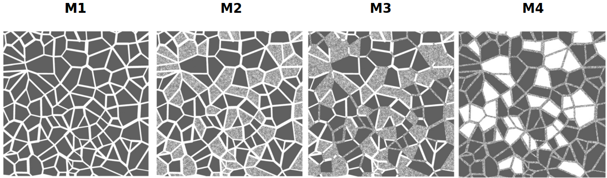

Intrinsic Permeability
Micromodels
Na experimentação de meios porosos os avanços na geração de micromodelos possibilitam a representação de diferentes tipos de rochas com micro e macro porosidades. Contudo, devido às suas características de fabricação, os micromodelos permitem apenas aproximações bidimensionais dos comportamentos de poros e conectivades presentes na estrutural da rocha.
Na presente Seção 4 casos verificação para permeabilidade intrínsica dos micromodelos são simulados utilizando a rotina de simulação de permeabilidade do LBPM. Os casos M1, M2, M3 e M4 foram simulados e comparados com os resultados experimentais de Wolf et al. A Figura abaixo ilustra a geometria de poros dos meios M1, M2, M3 e M4.

Arquivo de Entrada
MRT {
tau = 1.0
F = 0.0, 0.0, 1.0e-5
timestepMax = 2000
tolerance = 0.01
}
Domain {
Filename = "Bentheimer_LB_sim_intermediate_oil_wet_Sw_0p37.raw"
ReadType = "8bit" // data type
N = 900, 900, 1600 // size of original image
nproc = 2, 2, 2 // process grid
n = 200, 200, 200 // sub-domain size
offset = 300, 300, 300 // offset to read sub-domain
voxel_length = 1.66 // voxel length (in microns)
ReadValues = 0, 1, 2 // labels within the original image
WriteValues = 0, 1, 2 // associated labels to be used by LBPM
InletLayers = 0, 0, 10 // specify 10 layers along the z-inlet
BC = 0 // boundary condition type (0 for periodic)
}
Visualization {
}
As imagens *.raw do cada caso estão disponibilizada em (XX). As imagens possuem dimensão de 10x5880x5880 (x,y,z) onde os planos (0,y,z) e (9,y,z) descrevem as paredes sólidas do micromodelo.
Resultados
Os campo de magnitude de velocidade obtido para cada caso pode ser na Figura abaixo.
[ ]: